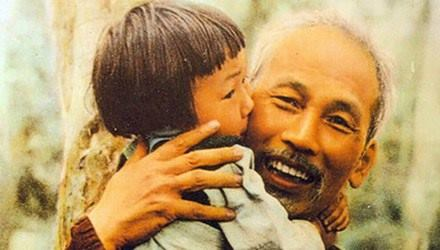

Mùa hè năm ấy (1967), trời Hà Nội rất nóng. Sức khỏe Bác Hồ đã kém, thần kinh tuổi già cũng suy nhược, dễ bị to¸mồ hôi, ướt đầm, có ngày phải thay mấy lần quần áo, có khi hong tại chỗ, rồi lại thay ngay. Bác không cho dùng máy điều hòa nhiệt độ. Bác bảo: mùi nó hôi lắm, Bác không chịu được ! ( Bác không dùng nên nói vậy thôi, chứ máy đã có nút xả thơm).
Thấy trời oi bức quá, Bác nói với đồng chí Vũ Kỳ:
- Nắng nóng thế này, các chú bộ đội trực phòng không trên nóc hội trường Ba Đình thì chịu sao được ? Các chú ấy có đủ nước uống không? Chú thử lên tìm hiểu xem thế nào, về cho Bác biết.
Đồng chí Vũ Kỳ lên, được biết trên đó có một tổ súng máy 14 ly 5. Ụ cát sơ sài, nếu địch bắn vào thì chỉ có hy sinh, rất nguy hiểm.
Trời nắng chói, đứng một lúc mà hoa cả mắt. Đồng chí Vũ Kỳ hỏi:
- Các đồng chí có nước ngọt uống không?
- Nước chè thường còn chưa có, lấy đâu ra nước ngọt!
Đồng chí Vũ Kỳ về nói lại với Bác, Bác gọi điện ngay cho đồng chí Văn Tiến Dũng:
- Sao các chú không lo đủ nước uống cho các chiến sĩ trực phòng không? Nghe nói ụ súng trên nóc hội trường Ba Đình rất sơ sài, chú phải lo sửa ngay để đảm bảo an toàn cho chiến sĩ trong chiến đấu!
Sau đó Bác bảo đồng chí Vũ Kỳ đi lấy sổ tiết kiệm của Bác, xem tiền tiết kiệm của Bác còn bao nhiêu.
Tại sao Bác có tiền tiết kiệm? Lương Bác cao nhất nước, nhưng hàng tháng cũng chỉ đủ tiêu. Mọi chi phí cho sinh hoạt của Bác, từ cái chổi lông gà, đều ghi vào lương cả.
Tiền tiết kiệm của Bác là do các báo trả nhuận bút cho Bác. Bác viết báo nhiều, có năm hàng trăm bài. Các báo gửi đến bao nhiêu, văn phòng đều gửi vào sổ tiết kiệm của Bác. Trong kháng chiến chống thực dân Pháp, Bác cũng đã có tiền tiết kiệm. Đến dịp tết Nguyên đán, Bác lại đem chia cho cán bộ các cơ quan chung quanh Bác, mua lợn để đón xuân.
Đồng chí Vũ Kỳ xem sổ và báo cáo:
- Thưa Bác, còn lại tất cả hơn 25.000 đồng (lúc đó là một món tiền rất lớn, tương đương với khoảng 60 lạng vàng).
Bác bảo:
- Chú chuyển ngay số tiền đó cho Bộ Tổng tham mưu và nói: đó là quà của Bác tặng để mua nước ngọt cho anh em chiến sĩ trực phòng không uống, không phải chỉ cho những chiến sĩ ở Ba Đình, mà cho tất cả các chiến sĩ đang trực chiến trên mâm pháo ở khắp miền Bắc. Nếu số tiền đó không đủ thì yêu cầu địa phương nào có bộ đội phòng không trực chiến góp sức vào cùng lo!
Về sau, Bộ Tư lệnh Phòng không Không quân báo cáo lại cho Văn phòng Phủ Chủ tịch biết: số tiền của Bác đủ mua nước uống cho bộ đội phòng không, không quân được một tuần!
Sưu tầm